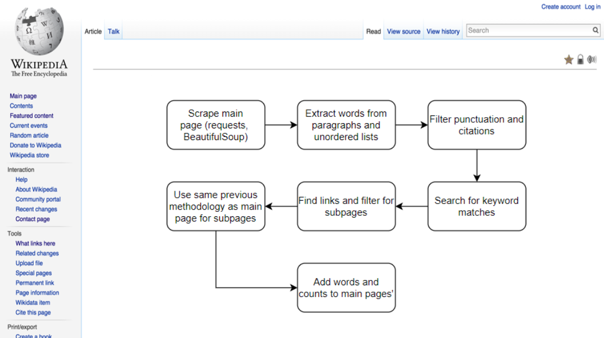

As part of our software design class at Olin, one other student, Jojo Liu,
and I designed a project to find out how prevalent keywords related to
the military-industrial complex are in Wikipedia pages related to different
engineering disciplines.

Methodology: Data Collection, Cleaning, Matching